Sadie Gardere — soulful scientist, author of the picture book When the Wind Changes
Art from When the Wind ChangesSadie Gardere soulful scientist
Soul leads. Science follows.
You don't need to be perfect. You just need to be present and willing to feel alongside them.
Presence is not a gift. It is a teachable skill.
I teach people how to be emotionally present, with themselves first, and then with the people they love most.
Love, when truly felt, has the power to heal. Not just you, but generations before and after you.
— Sadie
Get notifiedAbout
Hi, I'm Sadie.
My work begins where the retreat ends, at the front door of your home, with your child in your arms.
Clinician, Hoffman Institute teacher, author, and mom. I teach people how to be emotionally present: with themselves first, and then with the people they love most.
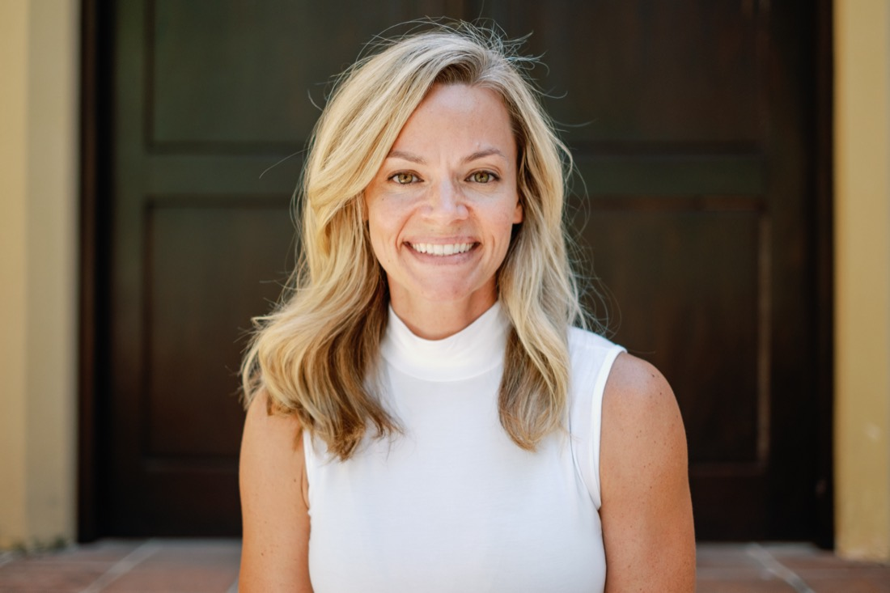
The story
On a night shift at UCSF Children's Hospital, a family had just learned their three-year-old didn't have the flu. He had leukemia. I saw his mother step into the hallway, press her back against the wall, and slide to the floor. I didn't know what to say. But I knew she felt alone. So I sat down next to her, close enough that she could feel my shoulder against hers. We sat like that for a while. Eventually she looked up. I hugged her, and she sobbed.
I didn't have language for what I'd done. I wouldn't for years. But that moment held the seed of everything that followed: the instinct that presence, not expertise, is what meets people in their darkest moments.
Two threads
The first is emotional depth, presence, and attunement: what happens in the space between people, and the difference that being truly felt can make in a life. The second is neuroscience. At Stanford I published research on oxytocin, the hormone we experience as love, and its relationship to anxiety in children. Even my science was following the same thread.
The turn inward
In 2015, my own son had a life-threatening accident. I discovered that the presence I'd been able to offer others, I couldn't access for myself. The following year I attended the Hoffman Process, and something shifted. The attunement I'd practiced outward was profoundly healing when I turned it inward. I have taught for the Hoffman Institute ever since.
But I kept seeing the same thing: adults doing the hard work of healing, then going home to their children without a bridge between the two. That's where When the Wind Changes came from.
- Clinician
- Medical Staff, Stanford
- UCSF Children's Hospital
- Teacher, The Hoffman Institute
- Published researcher on oxytocin & childhood anxiety
- Host, Love's Everyday Radius
- Author, When the Wind Changes (Tiny Torch Books, Feb 2027)
Letters from Sadie
Once or twice a month, a quiet note from me to you. Words you can borrow with your child, a thought from the science of love, a small invitation to slow down. No noise, no funnels. Just a letter.
I'll never share your email. Unsubscribe anytime.
The Book
When the Wind Changes
Written by Sadie Gardere. Illustrated by Anastasia Khmelevska and R.A. Smith.
Tiny Torch Books, an imprint of The Collective Book Studio. February 2027.
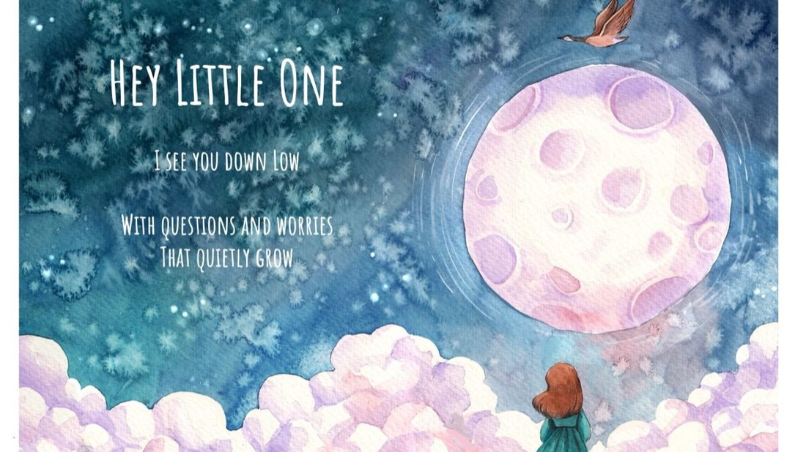
I am with you. I love you. You are never alone.
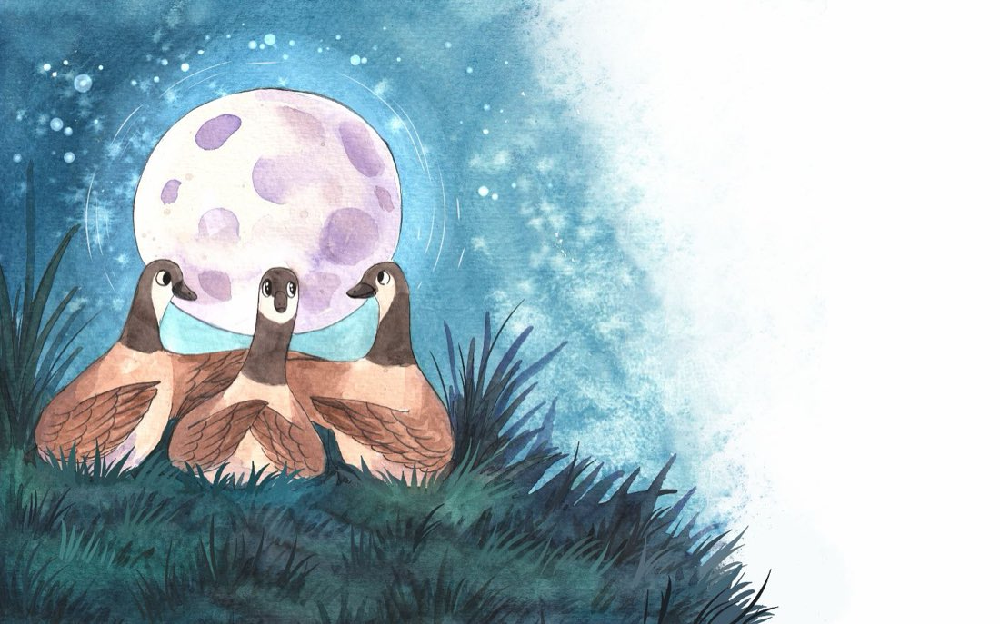
When the Wind Changes is a picture book for children, and the grownups who love them. It is a story of geese, courage, and the love that carries us through change: the scary nights, the hard goodbyes, the moments when the ground falls away.
It is also an invitation. An invitation for the grownup reading it to slow down, pull the child close, and remember that more is transmitted in touch, tone, and gaze than words could ever convey.
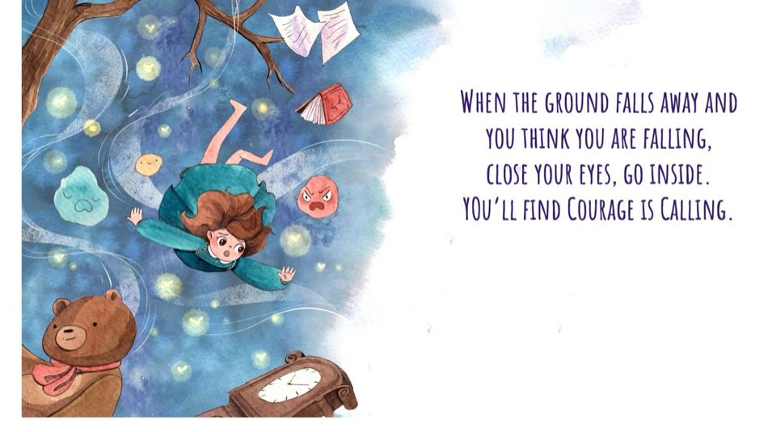
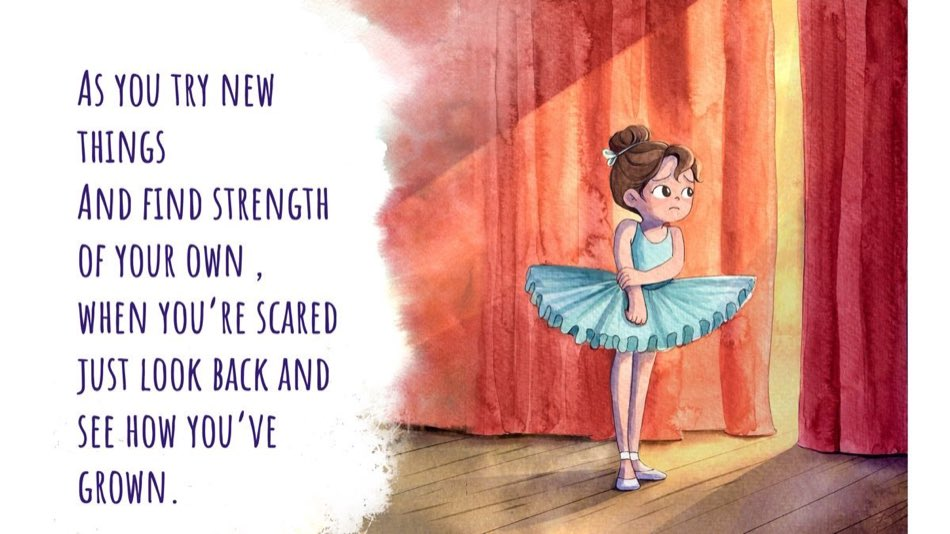
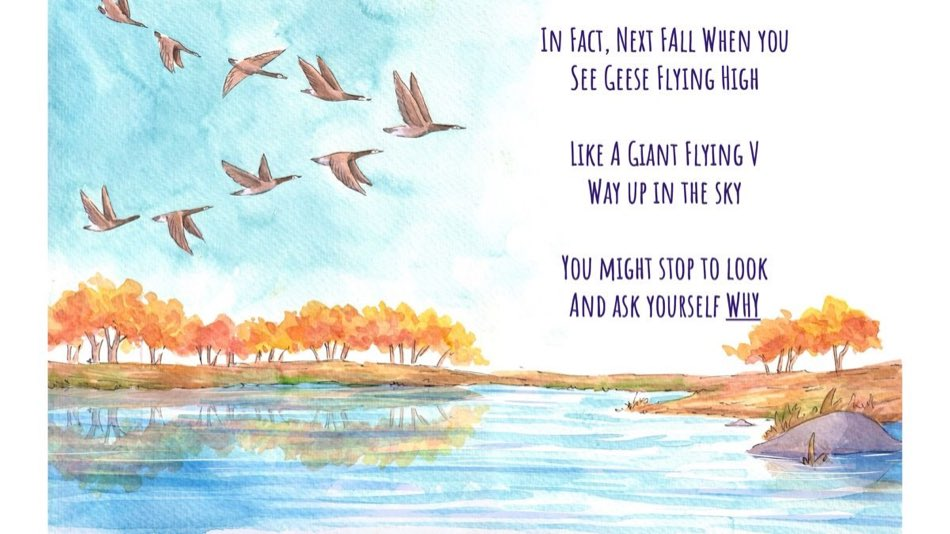
Who it's for
Parents reading to their child at bedtime, or during a challenging time of uncertainty. Grandparents reading to grandchildren. Older siblings reading to younger ones. Teachers focusing on social and emotional learning. Pediatric healthcare workers, child life specialists, and anyone who walks with children through change.
For grownups
This book is not only for your Little One. It is also for you. Hold your child close as you read, and allow the story to carry you both into a place of emotional connection.
If you feel moved or tender as you read, slow down and take note. Put your hand on your heart and breathe. This is a call to come home. Snuggle your child in as you snuggle yourself in too.
Pre-order soon
- Bookshop.org
- Amazon
- Barnes & Noble
- Books-A-Million
- Books & Books
- Vroman's
- Tiny Torch Books
- The Collective Book Studio
Pre-order links are being finalized — they'll go live here soon.
Get notified when pre-orders open
Are you a bookstore, school, hospital, or library? Contact us about bulk orders →
Emotional Attunement
Emotional attunement is the key. And it is a teachable skill.
Most of us were not met, mirrored, and made safe in our most intense emotions as children. So we learned to fear them. The work begins with the adults, not the children. Not with the child's behavior, not with the right strategy. It begins with our own unfinished emotional business.
When a child is truly met in a big feeling, something changes in their body. They experience what Dan Siegel calls feeling felt: the felt sense of not being alone inside an emotion. That experience, repeated, is how a nervous system learns that feelings can be survived, shared, and softened.
"Feeling felt" coined by Dr. Dan Siegel.
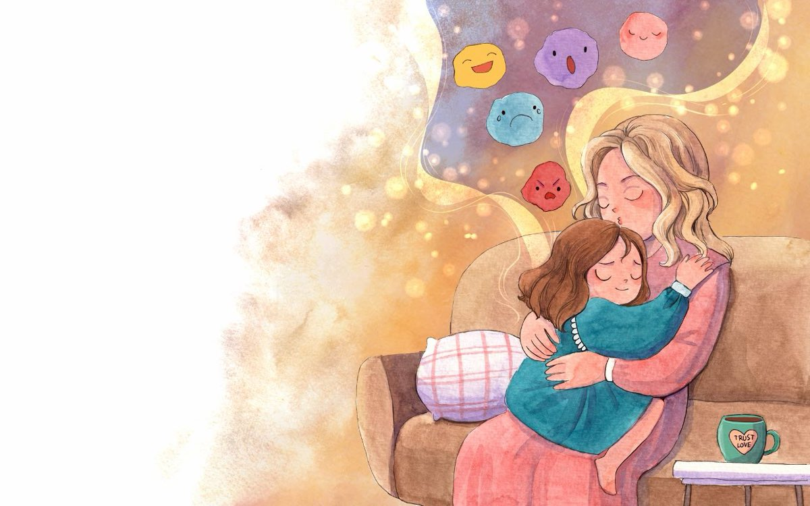
Write
Picture books for children, and the grownups who love them.
Speak
Keynotes and workshops on emotional attunement, the science of love, and parenting from presence.
Teach
Workshops and retreats for parents, educators, and anyone seeking deeper connection with the people they love.
Heal
Clinical practice and facilitation rooted in neuroscience, presence, and the felt sense of being loved.
Speaking & Workshops
Teaching people how to be emotionally present — with themselves first, and then with the people they love most.
Book Sadie to speak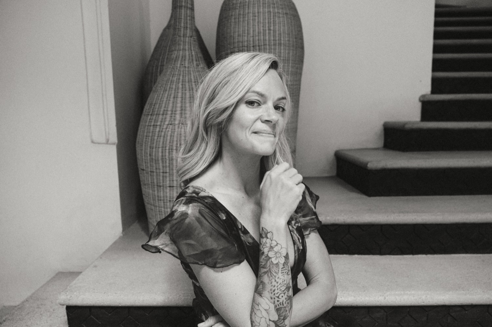
Keynotes
For conferences, schools, hospitals, and organizations. Topics include:
- The Science of Feeling Felt: neuroscience, co-regulation, and the healing power of presence
- Emotional Attunement as a Teachable Skill
- Parenting from Presence, Not Performance
- From Intergenerational Trauma to Intergenerational Love
Workshops
Half-day and full-day experiential workshops for parents, educators, clinicians, and leaders. Designed to move participants from understanding to felt experience.
Retreats
Small-group retreats co-created with trusted partners. By invitation or application.
Facilitation Training
For teachers, coaches, and facilitators who want to learn how to hold a room with emotional presence. Work close to my heart: equipping others to carry this kind of presence into their own teaching.
Who I work with
Parents and parent communities. Schools, educators, and healthcare teams. Leaders and leadership teams. Hoffman Institute graduates and staff. Couples and families seeking deeper connection. Anyone walking through change.
In the media
Interviews, podcasts, and press from the launch of When the Wind Changes — gathered in one place as the campaign unfolds.
For parents & teachers
Free resources for the grownups: watercolor coloring pages from the book's art, conversation guides for big feelings, and printable activities for classrooms and bedtimes.
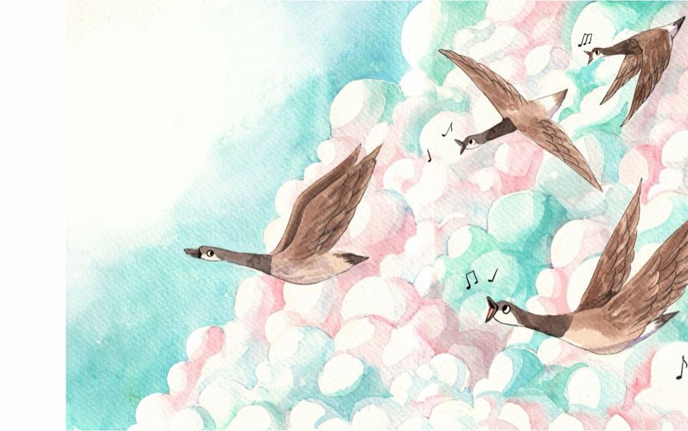
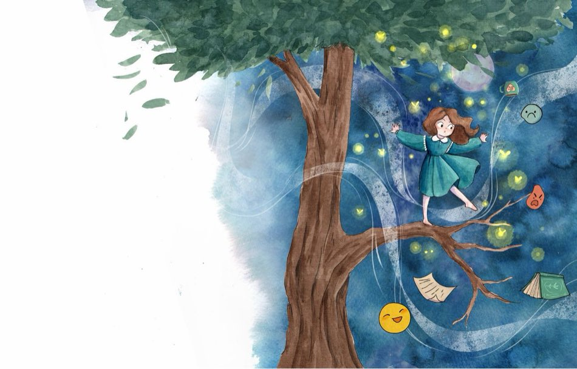
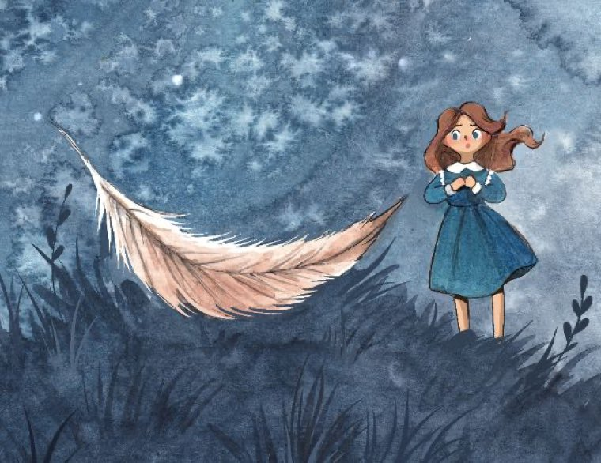
Let's stay in touch
Sadie Gardere soulful scientist
Letters from Sadie
Once or twice a month, a quiet note from me to you. Words you can borrow with your child, a thought from the science of love, a small invitation to slow down.
Inquiries
- Speaking & workshopsspeaking@sadiegardere.com
- Media & presspress@sadiegardere.com
- Public relationsMouth Digital + Public Relations
- Bulk book ordersbooks@sadiegardere.com
- Everything elseinfo@sadiegardere.com